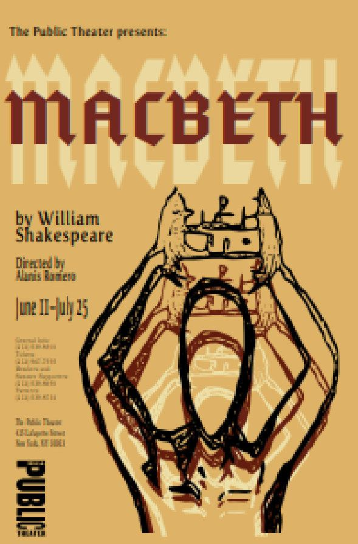
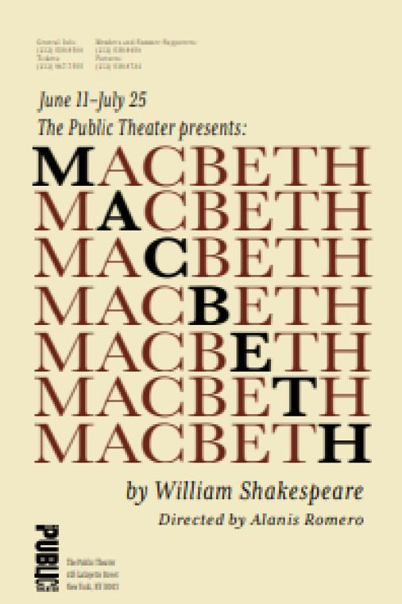

Macbeth
tres carteles, tres lecturas
✶ Texto de ejemplo: Alanis completará el encargo real
La idea
Tres caminos para la misma obra. Cada cartel cuenta la ambición de Macbeth desde un lenguaje distinto, pero los tres comparten paleta, tipografía y retícula para leerse como una sola campaña.
Las piezas
El primero usa una ilustración de alto contraste con la corona como símbolo. El segundo dibuja manos y corona con línea suelta. El tercero es solo tipografía: el título se repite y en cada línea resalta una letra.
Por qué está aquí
Muestra cómo Alanis explora varias soluciones para un mismo brief y mantiene un sistema visual coherente entre ellas.


